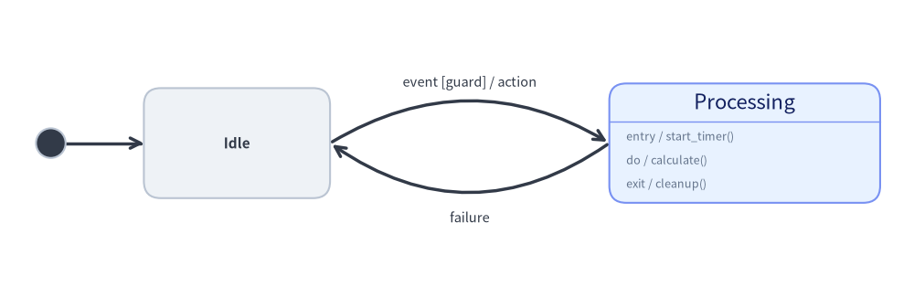
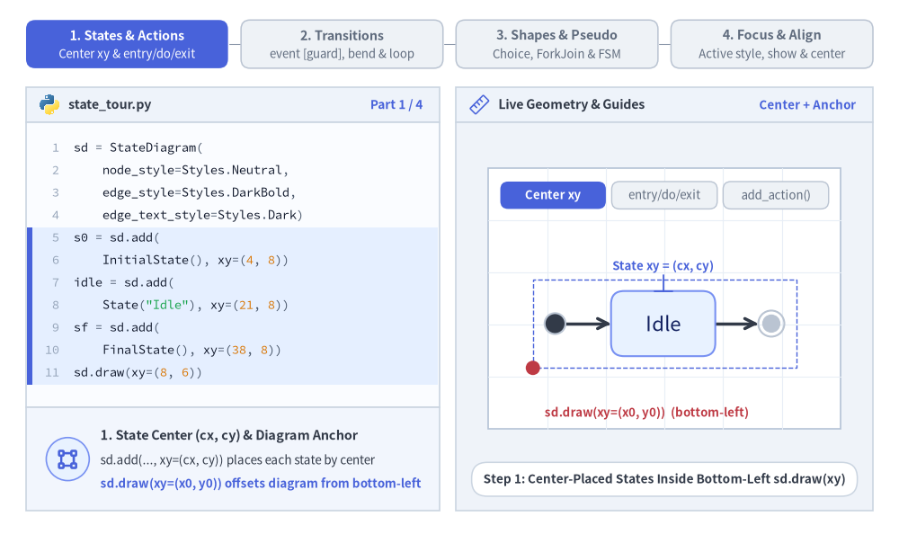
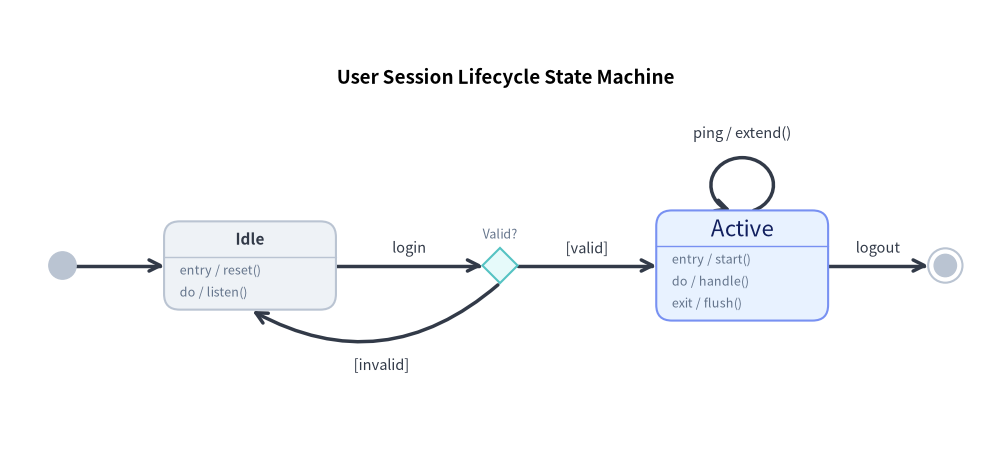
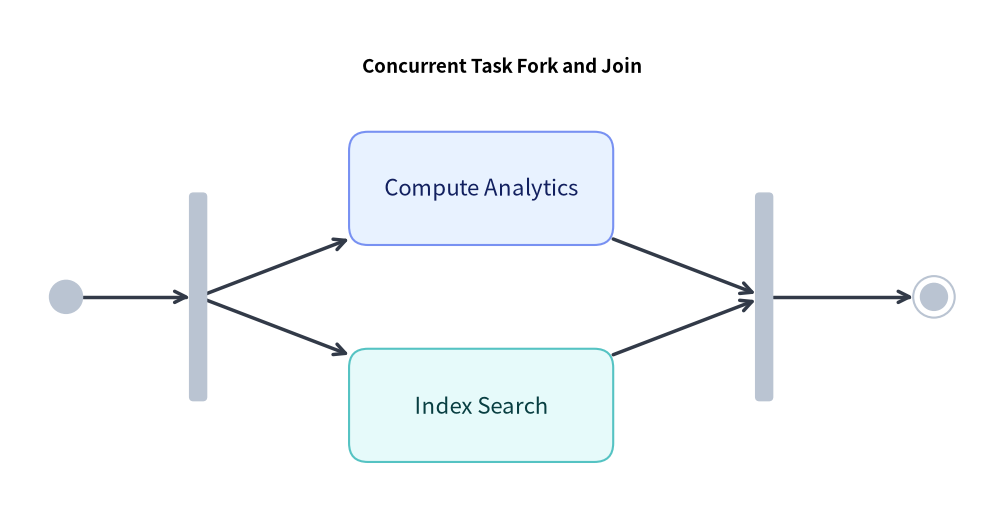
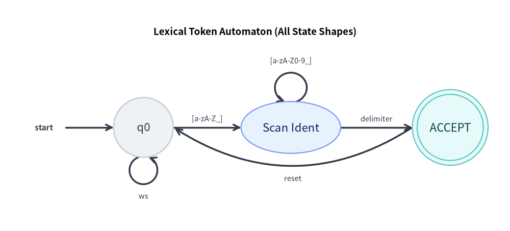

StateDiagram: UML Statecharts, Automata & Transitions
StateDiagram models behavioral state transitions, Finite State Machines (FSM), and UML 2.0 Statecharts. It provides dedicated pseudo-states, internal action compartments (entry, do, exit), and curved arc transitions.

Source Code
from drawlib.canvas import save, setup
from drawlib.diagrams.state import InitialState, State, StateDiagram
from drawlib.styles import Styles
setup(width=108, height=34)
sd = StateDiagram(
node_style=Styles.Neutral,
edge_style=Styles.DarkBold,
edge_text_style=Styles.Dark.patch(text_size=10.5),
)
init = sd.add(InitialState(style=Styles.Dark), xy=(6.0, 17.0))
idle = sd.add(State("Idle", shape="box", width=22.0, height=13.0), xy=(28.0, 17.0))
proc = sd.add(
State(
"Processing",
shape="box",
entry="start_timer()",
do="calculate()",
exit="cleanup()",
width=32.0,
style=Styles.PrimaryNeutral,
),
xy=(88.0, 17.0),
)
sd.connect(init, idle)
sd.connect(
idle,
proc,
event="event",
guard="guard",
action="action",
bend=-0.30,
start_side="top_right",
end_side="top_left",
)
sd.connect(
proc,
idle,
event="failure",
bend=-0.35,
start_side="bottom_left",
end_side="bottom_right",
text_style=Styles.Dark.patch(text_size=10.5, valign="top"),
)
sd.draw(xy=(0.0, 0.0))
save()
1. Core Concepts & Basic Usage
StateDiagram places states (State) and UML pseudo-states (InitialState, FinalState, ChoiceState, ForkJoinState) by their Center (cx, cy) coordinates inside a container anchored at Bottom-Left (x0, y0) (or align="center"). State cards support automatic UML action compartments (entry, do, exit, .add_action()), while sd.connect(...) formats event [guard] / action labels, curved bend arcs, and self-transition loops:

Source Code
from __future__ import annotations
from drawlib.anim import Animation
from drawlib.canvas import save, setup
from drawlib.diagrams.state import (
ChoiceState,
FinalState,
ForkJoinState,
InitialState,
State,
StateDiagram,
)
from drawlib.icons import code as code_icons
from drawlib.icons import phosphor
from drawlib.lines import line
from drawlib.shapes import circle, rectangle
from drawlib.smartarts import SourceCode, SourceCodeStyles
from drawlib.styles import Colors, Styles
from drawlib.text import text
W, H = 138.0, 82.0
setup(width=W, height=H)
anim = Animation(fps=10.0, loop=0)
CODE_TEXT_SIZE = 10.0
PT_TO_CANVAS = W / 720.0
FONT_CANVAS = CODE_TEXT_SIZE * PT_TO_CANVAS
LINE_H = FONT_CANVAS * 1.8
PAD_Y = FONT_CANVAS * 1.2
CODE_STYLES = SourceCodeStyles.get("default", font_lang="en", text_size=CODE_TEXT_SIZE).patch(
box_style=Styles.Neutral.patch(shape_fill_color=(0, 0, 0, 0), shape_line_width=0),
)
PANE_HEADER = Styles.Neutral.patch(
shape_fill_color=(238, 243, 250),
shape_line_color=(203, 213, 225),
shape_line_width=1.2,
shape_r=0.0,
)
EDITOR_BODY = Styles.Neutral.patch(
shape_fill_color=(250, 252, 255),
shape_line_color=(203, 213, 225),
shape_line_width=1.2,
shape_r=0.0,
)
TAKEAWAY_BODY = Styles.Neutral.patch(
shape_fill_color=(242, 246, 253),
shape_line_color=(203, 213, 225),
shape_line_width=1.2,
shape_r=0.0,
)
STUDIO_BODY = Styles.Neutral.patch(
shape_fill_color=(239, 243, 249),
shape_line_color=(203, 213, 225),
shape_line_width=1.2,
shape_r=0.0,
)
PART_ITEMS = [
("1. States & Actions", "Center xy & entry/do/exit"),
("2. Transitions", "event [guard], bend & loop"),
("3. Shapes & Pseudo", "Choice, ForkJoin & FSM"),
("4. Focus & Align", "Active style, show & center"),
]
def draw_step_bar(active_part: int) -> None:
"""Draw top 4-part progress bar (active_part is 1..4)."""
pill_w = 31.0
pill_h = 7.4
gap = 2.0
start_x = 4.0 + pill_w / 2.0
cy = 75.2
for idx, (label, sublabel) in enumerate(PART_ITEMS, start=1):
cx = start_x + (idx - 1) * (pill_w + gap)
if idx > 1:
prev_cx = cx - (pill_w + gap)
line(
(prev_cx + pill_w / 2.0 + 0.2, cy),
(cx - pill_w / 2.0 - 0.2, cy),
style=Styles.PrimaryBold if idx <= active_part else Styles.MutedThin,
)
if idx == active_part:
st = Styles.PrimaryFlat.patch(shape_r=1.4)
tst = Styles.WhiteBold.patch(text_size=10.3)
sub_tst = Styles.White.patch(text_size=9.5)
elif idx < active_part:
st = Styles.PrimaryNeutral.patch(shape_r=1.4, shape_line_width=1.1)
tst = Styles.PrimaryBold.patch(text_size=10.3)
sub_tst = Styles.Primary.patch(text_size=9.5)
else:
st = Styles.Neutral.patch(shape_r=1.4, shape_line_width=1.1)
tst = Styles.MutedBold.patch(text_size=10.3)
sub_tst = Styles.Muted.patch(text_size=9.5)
rectangle((cx, cy), width=pill_w, height=pill_h, style=st)
text((cx, cy + 1.35), label, style=tst)
text((cx, cy - 1.55), sublabel, style=sub_tst)
def draw_left_pane(
active_part: int,
code_lines: list[str],
hl_range: tuple[int, int],
icon_fn: object,
summary_title: str,
summary_line1: str,
summary_line2: str,
) -> None:
"""Draw left Python code editor + bottom concept takeaway card."""
x0, w = 4.0, 63.5
cx = x0 + w / 2.0
top_y = 63.2
header_h = 5.4
editor_h = 43.8
takeaway_h = 15.8
rectangle((cx, top_y + header_h / 2.0), width=w, height=header_h, style=PANE_HEADER)
code_icons.python((x0 + 3.6, top_y + header_h / 2.0), width=3.4, style=Styles.Neutral)
text(
(x0 + 6.5, top_y + header_h / 2.0),
"state_tour.py",
style=Styles.DarkBold.patch(text_size=10.2, halign="left"),
)
text(
(x0 + w - 2.6, top_y + header_h / 2.0),
f"Part {active_part} / 4",
style=Styles.PrimaryBold.patch(text_size=9.8, halign="right"),
)
rectangle((cx, top_y - editor_h / 2.0), width=w, height=editor_h, style=EDITOR_BODY)
hl_start, hl_end = hl_range
hl_top = top_y - PAD_Y - hl_start * LINE_H
hl_bot = top_y - PAD_Y - (hl_end + 1) * LINE_H
hl_cy = (hl_top + hl_bot) / 2.0
hl_h = hl_top - hl_bot
rectangle(
(cx, hl_cy),
width=w - 0.6,
height=hl_h,
style=Styles.Neutral.patch(shape_fill_color=(229, 239, 255), shape_line_width=0),
)
rectangle(
(x0 + 0.55, hl_cy),
width=0.9,
height=hl_h,
style=Styles.PrimaryFlat.patch(shape_line_width=0),
)
SourceCode.draw(
xy=(x0, top_y),
width=w,
code="\n".join(code_lines),
styles=CODE_STYLES,
code_lang="python",
show_linenum=True,
align="top_left",
)
take_cy = 3.6 + takeaway_h / 2.0
rectangle((cx, take_cy), width=w, height=takeaway_h, style=TAKEAWAY_BODY)
circle(
(x0 + 6.4, take_cy),
radius=3.3,
style=Styles.PrimaryNeutral.patch(shape_line_width=1.2),
)
icon_fn((x0 + 6.4, take_cy), width=3.8, style=Styles.PrimaryBold) # type: ignore[operator]
text(
(x0 + 11.4, take_cy + 3.6),
summary_title,
style=Styles.DarkBold.patch(text_size=10.4, halign="left"),
)
text(
(x0 + 11.4, take_cy - 0.2),
summary_line1,
style=Styles.Dark.patch(text_size=9.7, halign="left"),
)
text(
(x0 + 11.4, take_cy - 3.8),
summary_line2,
style=Styles.PrimaryBold.patch(text_size=9.6, halign="left"),
)
def draw_geometry_studio(param_badge: str, footer_caption: str) -> tuple[float, float]:
"""Draw right geometry lab shell, inner coordinate sheet with subtle grid, and footer."""
x0, w = 70.0, 64.0
cx = x0 + w / 2.0
top_y = 63.2
header_h = 5.4
body_h = 59.6
rectangle((cx, top_y + header_h / 2.0), width=w, height=header_h, style=PANE_HEADER)
phosphor.ruler((x0 + 3.6, top_y + header_h / 2.0), width=3.4, style=Styles.Primary)
text(
(x0 + 6.5, top_y + header_h / 2.0),
"Live Geometry & Guides",
style=Styles.DarkBold.patch(text_size=10.2, halign="left"),
)
text(
(x0 + w - 2.6, top_y + header_h / 2.0),
param_badge,
style=Styles.PrimaryBold.patch(text_size=9.6, halign="right"),
)
rectangle((cx, 3.6 + body_h / 2.0), width=w, height=body_h, style=STUDIO_BODY)
sheet_cx, sheet_cy = cx, 36.2
sheet_w, sheet_h = 54.0, 40.0
sx0, sy0 = sheet_cx - sheet_w / 2.0, sheet_cy - sheet_h / 2.0
rectangle(
(sheet_cx, sheet_cy),
width=sheet_w,
height=sheet_h,
style=Styles.Neutral.patch(
shape_fill_color=(255, 255, 255),
shape_line_color=(180, 194, 214),
shape_line_width=1.2,
),
)
g_st = Styles.MutedThin.patch(line_color=(232, 238, 246), line_width=0.8)
for gx in range(1, 6):
vx = sx0 + gx * (sheet_w / 6.0)
line((vx, sy0), (vx, sy0 + sheet_h), style=g_st)
for gy in range(1, 5):
vy = sy0 + gy * (sheet_h / 5.0)
line((sx0, vy), (sx0 + sheet_w, vy), style=g_st)
rectangle(
(cx, 8.4),
width=59.2,
height=5.2,
style=Styles.Neutral.patch(
shape_fill_color=(255, 255, 255),
shape_line_color=(203, 213, 225),
shape_line_width=1.1,
shape_r=2.4,
),
text=footer_caption,
text_style=Styles.DarkBold.patch(text_size=9.8),
)
return sheet_cx, sheet_cy
def draw_sub_pills(scx: float, labels: list[str], active_idx: int) -> None:
"""Draw 3-step tracker pills near the top of the studio sheet."""
pw, ph, pgap = 16.2, 4.2, 0.9
p_start = scx - (3 * pw + 2 * pgap) / 2.0 + pw / 2.0
for idx, lbl in enumerate(labels):
px = p_start + idx * (pw + pgap)
if idx == active_idx:
pst = Styles.PrimaryFlat.patch(shape_r=1.2)
ptst = Styles.WhiteBold.patch(text_size=9.5)
elif idx < active_idx:
pst = Styles.PrimaryNeutral.patch(shape_r=1.2, shape_line_width=1.0)
ptst = Styles.PrimaryBold.patch(text_size=9.5)
else:
pst = Styles.Neutral.patch(shape_r=1.2, shape_line_width=1.0)
ptst = Styles.Muted.patch(text_size=9.5)
rectangle((px, 52.0), width=pw, height=ph, style=pst, text=lbl, text_style=ptst)
EDGE_TXT = Styles.Dark.patch(text_size=9.8)
# =========================================================================
# Part 1: States & Actions — Center xy, entry/do/exit & add_action()
# =========================================================================
PART1_STATES = [
(
"basic_anchors",
3.3,
[
"sd = StateDiagram(",
" node_style=Styles.Neutral,",
" edge_style=Styles.DarkBold,",
" edge_text_style=Styles.Dark)",
"s0 = sd.add(",
" InitialState(), xy=(4, 8))",
"idle = sd.add(",
' State("Idle"), xy=(21, 8))',
"sf = sd.add(",
" FinalState(), xy=(38, 8))",
"sd.draw(xy=(8, 6))",
],
(4, 10),
"Center + Anchor",
"Step 1: Center-Placed States Inside Bottom-Left sd.draw(xy)",
"1. State Center (cx, cy) & Diagram Anchor",
"sd.add(..., xy=(cx, cy)) places each state by center",
"sd.draw(xy=(x0, y0)) offsets diagram from bottom-left",
),
(
"entry_do_exit",
3.3,
[
"sd = StateDiagram(...)",
"s0 = sd.add(",
" InitialState(), xy=(4, 10))",
"run = sd.add(",
" State(",
' "Running",',
' entry="init()",',
' do="work()",',
' exit="stop()"),',
" xy=(23, 10))",
'sd.connect(s0, run, event="run")',
],
(3, 9),
"entry / do / exit",
"Step 2: UML Action Compartment (entry, do, exit)",
"2. UML Internal Action Compartment",
"Adds header divider & formats entry / do / exit rows",
"Card height auto-expands to fit internal triggers",
),
(
"add_action",
3.5,
[
"sd = StateDiagram(...)",
"run = sd.add(",
" State(",
' "Running",',
' entry="init()",',
' do="work()",',
' exit="stop()"),',
" xy=(23, 11))",
"# Append custom internal trigger",
"run.add_action(",
' "timeout", "retry()")',
],
(8, 10),
"add_action()",
'Step 3: Custom Trigger Row via .add_action("timeout", ...)',
"3. Custom Internal Triggers (.add_action)",
"Appends '{kind} / {action}' rows below standard ones",
"Fluent method returns self for clean chaining",
),
]
for p1_idx, (p1_mode, dur, code_1, hl_rng, badge_txt, foot_txt, s_t, s_1, s_2) in enumerate(PART1_STATES):
with anim.frame(duration=dur):
draw_step_bar(1)
draw_left_pane(1, code_1, hl_rng, phosphor.bounding_box, s_t, s_1, s_2)
scx, scy = draw_geometry_studio(badge_txt, foot_txt)
draw_sub_pills(scx, ["Center xy", "entry/do/exit", "add_action()"], p1_idx)
if p1_mode == "basic_anchors":
sd = StateDiagram(
node_style=Styles.Neutral,
edge_style=Styles.DarkBold,
edge_text_style=EDGE_TXT,
margin=1.8,
)
s0 = sd.add(InitialState(radius=1.6, style=Styles.Dark), xy=(3.4, 6.8))
idle = sd.add(State("Idle", width=16.0, height=10.0, style=Styles.PrimaryNeutral), xy=(20.0, 6.8))
sf = sd.add(FinalState(radius=2.0), xy=(36.6, 6.8))
sd.connect(s0, idle)
sd.connect(idle, sf)
dx0, dy0 = 81.8, 25.5
sd.draw(xy=(dx0, dy0))
min_x, min_y, max_x, max_y = sd.get_bounds()
c_min_x, c_max_x = dx0 + min_x - sd.margin, dx0 + max_x + sd.margin
c_min_y, c_max_y = dy0 + min_y - sd.margin, dy0 + max_y + sd.margin
rectangle(
(0.5 * (c_min_x + c_max_x), 0.5 * (c_min_y + c_max_y)),
width=c_max_x - c_min_x,
height=c_max_y - c_min_y,
style=Styles.PrimaryDashed.patch(shape_fill_color=(0, 0, 0, 0), shape_line_width=1.0),
)
# Center crosshair on Idle state
icx, icy = dx0 + 20.0, dy0 + 6.8
line((icx, icy + 5.0), (icx, icy + 7.4), style=Styles.PrimaryBold.patch(line_width=1.3))
line((icx - 1.4, icy + 5.0), (icx + 1.4, icy + 5.0), style=Styles.PrimaryBold.patch(line_width=1.3))
text(
(icx, icy + 8.8),
"State xy = (cx, cy)",
style=Styles.PrimaryBold.patch(text_size=9.5),
)
# Red bottom-left dot on sd.draw(xy=(x0, y0))
circle((c_min_x, c_min_y), radius=1.1, style=Styles.DangerFlat)
text(
(c_min_x + 1.8, 18.6),
"sd.draw(xy=(x0, y0)) (bottom-left)",
style=Styles.DangerBold.patch(text_size=9.5, halign="left"),
)
elif p1_mode == "entry_do_exit":
sd = StateDiagram(
node_style=Styles.Neutral,
edge_style=Styles.DarkBold,
edge_text_style=EDGE_TXT,
margin=1.5,
)
s0 = sd.add(InitialState(radius=1.6, style=Styles.Dark), xy=(3.0, 9.0))
run = sd.add(
State(
"Running",
entry="init()",
do="work()",
exit="stop()",
width=22.5,
style=Styles.PrimaryNeutral,
),
xy=(21.5, 9.0),
)
sf = sd.add(FinalState(radius=1.9), xy=(40.0, 9.0))
sd.connect(s0, run, event="run")
sd.connect(run, sf, event="done")
sd.draw(xy=(80.5, 25.0))
text(
(scx, 18.4),
"header divider + auto-sized entry / do / exit rows",
style=Styles.PrimaryBold.patch(text_size=9.5),
)
else:
sd = StateDiagram(
node_style=Styles.Neutral,
edge_style=Styles.DarkBold,
edge_text_style=EDGE_TXT,
margin=1.5,
)
s0 = sd.add(InitialState(radius=1.6, style=Styles.Dark), xy=(3.0, 10.0))
run = sd.add(
State(
"Running",
entry="init()",
do="work()",
exit="stop()",
width=24.0,
style=Styles.PrimaryNeutral,
),
xy=(21.0, 10.0),
)
run.add_action("timeout", "retry()")
sf = sd.add(FinalState(radius=1.9), xy=(39.5, 10.0))
sd.connect(s0, run)
sd.connect(run, sf)
dx0, dy0 = 79.5, 24.2
sd.draw(xy=(dx0, dy0))
# Point to 4th custom row at bottom of compartment
row4_y = dy0 + 10.0 + run.effective_height / 2.0 - 4.5 - 1.8 - 3 * 2.8
line(
(dx0 + 21.0 + 12.6, row4_y),
(dx0 + 21.0 + 16.0, row4_y),
arrow_head="<-",
style=Styles.DangerBold.patch(line_width=1.2),
)
text(
(dx0 + 21.0 + 16.5, row4_y),
"+ custom",
style=Styles.DangerBold.patch(text_size=9.5, halign="left"),
)
text(
(scx, 18.4),
'add_action("timeout", "retry()") -> "timeout / retry()"',
style=Styles.PrimaryBold.patch(text_size=9.5),
)
# =========================================================================
# Part 2: Transitions — event [guard] / action, curved bend & self-loop
# =========================================================================
PART2_STATES = [
(
"uml_label",
3.3,
[
"sd = StateDiagram(...)",
"idle = sd.add(",
' State("Idle", width=13),',
" xy=(8, 10))",
"run = sd.add(",
' State("Running", width=15),',
" xy=(40, 10))",
"sd.connect(",
" idle, run,",
' event="start", guard="ready",',
' action="boot()")',
],
(7, 10),
"event [guard]",
'Step 1: Auto-Formatted "start [ready] / boot()" Label',
"1. UML Transition Syntax (event, guard, action)",
"Formats cleanly as 'event [guard] / action'",
"Any subset of event, guard, or action works cleanly",
),
(
"curved_bend",
3.3,
[
"sd.connect(",
" idle, active,",
' event="login", bend=-0.28,',
' start_side="top_right",',
' end_side="top_left")',
"sd.connect(",
" active, idle,",
' event="logout", bend=-0.28,',
' start_side="bottom_left",',
' end_side="bottom_right")',
"sd.draw(xy=(6, 6))",
],
(0, 9),
"bend = -0.28",
"Step 2: Opposing Curved Arcs via bend & Diagonal Sides",
"2. Bidirectional Curved Arcs (bend = -0.28)",
"Separates forward & return transitions cleanly",
"8 anchor sides: top_right, bottom_left, etc.",
),
(
"self_loop",
3.5,
[
"sd = StateDiagram(...)",
"idle = sd.add(",
' State("Idle"), xy=(10, 8))',
"run = sd.add(",
' State("Running"), xy=(35, 8))',
'sd.connect(idle, run, event="go")',
"# Self-loop on top boundary",
"sd.connect(",
" run, run,",
' event="tick", side="top")',
"sd.draw(xy=(6, 6))",
],
(6, 9),
'side="top" loop',
'Step 3: Self-Transition Loop via sd.connect(run, run, ...)',
"3. Self-Transition Loop (source is target)",
"Attaches elliptical loop to top/bottom/left/right",
"Tune loop_width, loop_height & loop_ratio freely",
),
]
for p2_idx, (p2_mode, dur, code_2, hl_rng, badge_txt, foot_txt, s_t, s_1, s_2) in enumerate(PART2_STATES):
with anim.frame(duration=dur):
draw_step_bar(2)
draw_left_pane(2, code_2, hl_rng, phosphor.arrow_bend_up_right, s_t, s_1, s_2)
scx, scy = draw_geometry_studio(badge_txt, foot_txt)
draw_sub_pills(scx, ["event [guard]", "bend = -0.28", "Self-Loop"], p2_idx)
if p2_mode == "uml_label":
sd = StateDiagram(
node_style=Styles.Neutral,
edge_style=Styles.PrimaryBold,
edge_text_style=Styles.PrimaryBold.patch(text_size=9.6),
margin=1.5,
)
idle = sd.add(State("Idle", width=11.8, height=9.2), xy=(6.5, 9.0))
run = sd.add(State("Running", width=13.6, height=9.2, style=Styles.PrimaryNeutral), xy=(38.8, 9.0))
sd.connect(idle, run, event="start", guard="ready", action="boot()")
sd.draw(xy=(79.2, 24.5))
text(
(scx, 18.4),
'event="start", guard="ready", action="boot()"',
style=Styles.DarkBold.patch(text_size=9.5),
)
elif p2_mode == "curved_bend":
sd = StateDiagram(
node_style=Styles.Neutral,
edge_style=Styles.DarkBold,
edge_text_style=Styles.DarkBold.patch(text_size=9.8),
margin=1.5,
)
idle = sd.add(State("Idle", width=13.5, height=9.5), xy=(8.0, 10.0))
active = sd.add(State("Active", width=14.5, height=9.5, style=Styles.PrimaryNeutral), xy=(36.0, 10.0))
sd.connect(
idle,
active,
event="login",
bend=-0.28,
start_side="top_right",
end_side="top_left",
style=Styles.PrimaryBold,
text_style=Styles.PrimaryBold.patch(text_size=9.8),
)
sd.connect(
active,
idle,
event="logout",
bend=-0.28,
start_side="bottom_left",
end_side="bottom_right",
text_style=Styles.DarkBold.patch(text_size=9.8, valign="top"),
)
sd.draw(xy=(80.0, 24.2))
text(
(scx, 18.2),
"top_right -> top_left & bottom_left -> bottom_right",
style=Styles.PrimaryBold.patch(text_size=9.5),
)
else:
sd = StateDiagram(
node_style=Styles.Neutral,
edge_style=Styles.DarkBold,
edge_text_style=Styles.DarkBold.patch(text_size=9.8),
margin=1.5,
)
idle = sd.add(State("Idle", width=13.5, height=9.0), xy=(8.5, 6.5))
run = sd.add(State("Running", width=16.0, height=9.0, style=Styles.PrimaryNeutral), xy=(33.5, 6.5))
sd.connect(idle, run, event="go")
sd.connect(
run,
run,
event="tick",
side="top",
loop_width=7.2,
loop_height=6.0,
style=Styles.PrimaryBold,
text_style=Styles.PrimaryBold.patch(text_size=9.8),
)
sd.draw(xy=(80.5, 23.8))
text(
(scx, 18.4),
'sd.connect(run, run, event="tick", side="top")',
style=Styles.PrimaryBold.patch(text_size=9.5),
)
# =========================================================================
# Part 3: Shapes & Pseudo — ChoiceState, ForkJoinState & FSM Circles
# =========================================================================
PART3_STATES = [
(
"choice",
3.3,
[
"req = sd.add(",
' State("Verify"), xy=(9, 12))',
"ok = sd.add(",
' State("Ready"), xy=(40, 18))',
"err = sd.add(",
' State("Denied"), xy=(40, 6))',
"chk = sd.add(",
" ChoiceState(), xy=(24, 12))",
"sd.connect(req, chk)",
'sd.connect(chk, ok, guard="ok")',
'sd.connect(chk, err, guard="err")',
],
(6, 10),
"ChoiceState",
"Step 1: Dynamic Guard Branching via ChoiceState Diamond",
"1. Choice Diamond Pseudo-State (ChoiceState)",
"Evaluates mutually exclusive [ok] vs [err] guards",
"Routes cleanly from top/bottom/right diamond tips",
),
(
"fork_join",
3.3,
[
"fork = sd.add(ForkJoinState(",
' orientation="vertical",',
" length=15), xy=(11, 12))",
"join = sd.add(ForkJoinState(",
' orientation="vertical",',
" length=15), xy=(41, 12))",
"a = sd.add(",
' State("Audio"), xy=(26, 18))',
"b = sd.add(",
' State("Video"), xy=(26, 6))',
"sd.connect(fork, a) # & join",
],
(0, 5),
"ForkJoinState",
'Step 2: Concurrent Split & Join Bars (ForkJoinState)',
"2. Concurrent Synchronization (ForkJoinState)",
'Solid bar ("vertical" or "horizontal") splits threads',
"Joins parallel sub-tasks before final completion",
),
(
"fsm_shapes",
3.5,
[
"s0 = sd.add(State(",
' "start", shape="text_only"),',
" xy=(6, 12))",
"q0 = sd.add(State(",
' "q0", shape="circle",',
" width=11), xy=(22, 12))",
"q1 = sd.add(State(",
' "OK", shape="double_circle",',
" width=12), xy=(40, 12))",
"sd.connect(s0, q0)",
'sd.connect(q0, q1, label="eof")',
],
(3, 8),
"FSM Circles",
'Step 3: Classic Automaton Shapes (circle & double_circle)',
"3. All 5 State Geometric Shapes",
"Supports box, ellipse, circle, double_circle, text_only",
"double_circle marks classic FSM accepting states",
),
]
for p3_idx, (p3_mode, dur, code_3, hl_rng, badge_txt, foot_txt, s_t, s_1, s_2) in enumerate(PART3_STATES):
with anim.frame(duration=dur):
draw_step_bar(3)
draw_left_pane(3, code_3, hl_rng, phosphor.git_fork, s_t, s_1, s_2)
scx, scy = draw_geometry_studio(badge_txt, foot_txt)
draw_sub_pills(scx, ["ChoiceState", "ForkJoinState", "FSM Shapes"], p3_idx)
if p3_mode == "choice":
sd = StateDiagram(
node_style=Styles.Neutral,
edge_style=Styles.DarkBold,
edge_text_style=Styles.DarkBold.patch(text_size=9.5),
margin=1.2,
)
req = sd.add(State("Verify", width=13.5, height=8.2), xy=(7.5, 11.5))
chk = sd.add(ChoiceState(size=4.6, style=Styles.PrimaryNeutral), xy=(22.5, 11.5))
ok = sd.add(State("Ready", width=14.0, height=7.8, style=Styles.PrimaryNeutral), xy=(39.0, 17.6))
err = sd.add(State("Denied", width=14.0, height=7.8, style=Styles.SecondaryNeutral), xy=(39.0, 5.4))
sd.connect(req, chk)
sd.connect(
chk,
ok,
guard="ok",
start_side="top",
end_side="left",
bend=-0.18,
style=Styles.PrimaryBold,
text_style=Styles.PrimaryBold.patch(text_size=9.5),
)
sd.connect(
chk,
err,
guard="err",
start_side="bottom",
end_side="left",
bend=0.18,
text_style=Styles.DarkBold.patch(text_size=9.5, valign="top"),
)
sd.draw(xy=(78.8, 22.8))
text(
(scx, 18.2),
"ChoiceState diamond branches on [ok] vs [err]",
style=Styles.PrimaryBold.patch(text_size=9.5),
)
elif p3_mode == "fork_join":
sd = StateDiagram(
node_style=Styles.Neutral,
edge_style=Styles.DarkBold,
edge_text_style=EDGE_TXT,
margin=1.2,
)
s0 = sd.add(InitialState(radius=1.4, style=Styles.Dark), xy=(2.2, 11.5))
fork = sd.add(ForkJoinState(orientation="vertical", length=15.0, thickness=1.6), xy=(9.5, 11.5))
a = sd.add(State("Audio", width=14.5, height=7.4, style=Styles.PrimaryNeutral), xy=(24.0, 17.2))
b = sd.add(State("Video", width=14.5, height=7.4, style=Styles.SecondaryNeutral), xy=(24.0, 5.8))
join = sd.add(ForkJoinState(orientation="vertical", length=15.0, thickness=1.6), xy=(38.5, 11.5))
sf = sd.add(FinalState(radius=1.7), xy=(45.8, 11.5))
sd.connect(s0, fork)
sd.connect(fork, a)
sd.connect(fork, b)
sd.connect(a, join)
sd.connect(b, join)
sd.connect(join, sf)
sd.draw(xy=(78.0, 22.8))
text(
(scx, 18.2),
'ForkJoinState(orientation="vertical") splits & joins',
style=Styles.PrimaryBold.patch(text_size=9.5),
)
else:
sd = StateDiagram(
node_style=Styles.Neutral,
edge_style=Styles.DarkBold,
edge_text_style=Styles.DarkBold.patch(text_size=9.6),
margin=1.2,
)
s0 = sd.add(State("start", shape="text_only", width=9.0, height=6.0), xy=(5.0, 8.0))
q0 = sd.add(State("q0", shape="circle", width=10.5, style=Styles.Neutral), xy=(20.5, 8.0))
q1 = sd.add(
State("OK", shape="double_circle", width=12.0, style=Styles.PrimaryNeutral),
xy=(39.0, 8.0),
)
sd.connect(s0, q0)
sd.connect(q0, q0, label="0..9", side="top", loop_width=5.6, loop_height=5.2)
sd.connect(q0, q1, label="eof", style=Styles.PrimaryBold)
sd.draw(xy=(79.0, 24.5))
text(
(scx, 18.2),
'text_only -> circle ("q0") -> double_circle ("OK")',
style=Styles.PrimaryBold.patch(text_size=9.5),
)
# =========================================================================
# Part 4: Focus & Align — Active State Focus, show=False & align="center"
# =========================================================================
PART4_STATES = [
(
"active_focus",
3.3,
[
'idle = sd.add(State("Idle"),',
" xy=(9, 12))",
"st = Styles.PrimaryFlat.patch(",
" text_color=Colors.White)",
"active = sd.add(State(",
' "Active", style=st),',
" xy=(26, 12))",
'done = sd.add(State("Done"),',
" xy=(43, 12))",
"sd.connect(idle, active)",
"sd.connect(active, done)",
],
(2, 6),
"PrimaryFlat",
"Step 1: Highlight Current Active State (50%+ Neutral Rule)",
"1. Focal State Highlight (PrimaryFlat)",
"Grounds sibling states in calm Styles.Neutral (67%)",
"Reserves saturated PrimaryFlat for active execution",
),
(
"show_false",
3.3,
[
"idle = sd.add(",
' State("Idle"), xy=(9, 12))',
"active = sd.add(",
' State("Active"), xy=(26, 12))',
"# Hide state & incoming edge;",
"# diagram bounds stay locked!",
"done = sd.add(",
' State("Done", show=False),',
" xy=(43, 12))",
"sd.connect(idle, active)",
"sd.connect(active, done)",
],
(4, 8),
"show=False",
"Step 2: Hide State & Connected Edges Without Layout Jump",
"2. Bounds-Locked Visibility (show=False)",
"Connected transitions auto-hide when endpoint hides",
"sd.get_bounds() stays fixed for jitter-free traces",
),
(
"center_align",
3.5,
[
"s0 = sd.add(",
" InitialState(), xy=(10, 4))",
"idle = sd.add(",
' State("Idle"), xy=(10, 16))',
"act = sd.add(",
' State("Active"), xy=(35, 16))',
"done = sd.add(",
' State("Done"), xy=(35, 4))',
"sd.connect(s0, idle) # + chain",
"sd.draw(",
' xy=(34, 24), align="center")',
],
(9, 10),
'align="center"',
'Step 3: Center Diagram Bounds on xy=(cx, cy)',
'3. Centered Placement (align="center")',
"Centers enclosing state bounds cleanly on xy",
"Pairs naturally with centered slide & Studio layouts",
),
]
for p4_idx, (p4_mode, dur, code_4, hl_rng, badge_txt, foot_txt, s_t, s_1, s_2) in enumerate(PART4_STATES):
with anim.frame(duration=dur):
draw_step_bar(4)
draw_left_pane(4, code_4, hl_rng, phosphor.crosshair, s_t, s_1, s_2)
scx, scy = draw_geometry_studio(badge_txt, foot_txt)
draw_sub_pills(scx, ["Active Focus", "show=False", 'align="center"'], p4_idx)
if p4_mode == "active_focus":
sd = StateDiagram(
node_style=Styles.Neutral,
edge_style=Styles.DarkBold,
edge_text_style=EDGE_TXT,
margin=1.6,
)
idle = sd.add(State("Idle", width=11.8, height=9.0, style=Styles.Neutral), xy=(7.5, 8.5))
active = sd.add(
State(
"Active",
width=12.6,
height=9.0,
style=Styles.PrimaryFlat.patch(text_color=Colors.White),
),
xy=(23.5, 8.5),
)
done = sd.add(State("Done", width=11.8, height=9.0, style=Styles.Neutral), xy=(39.5, 8.5))
sd.connect(idle, active, style=Styles.PrimaryBold)
sd.connect(active, done)
sd.draw(xy=(78.5, 25.0))
text(
(scx, 18.4),
"2/3 Neutral baseline + 1 PrimaryFlat focal state",
style=Styles.PrimaryBold.patch(text_size=9.5),
)
elif p4_mode == "show_false":
sd = StateDiagram(
node_style=Styles.Neutral,
edge_style=Styles.DarkBold,
edge_text_style=EDGE_TXT,
margin=1.6,
)
idle = sd.add(State("Idle", width=11.8, height=9.0, style=Styles.Neutral), xy=(7.5, 8.5))
active = sd.add(
State("Active", width=12.6, height=9.0, style=Styles.PrimaryNeutral),
xy=(23.5, 8.5),
)
done = sd.add(State("Done", width=11.8, height=9.0, show=False), xy=(39.5, 8.5))
sd.connect(idle, active, style=Styles.PrimaryBold)
sd.connect(active, done)
dx0, dy0 = 78.5, 25.0
sd.draw(xy=(dx0, dy0))
min_x, min_y, max_x, max_y = sd.get_bounds()
c_min_x, c_max_x = dx0 + min_x - sd.margin, dx0 + max_x + sd.margin
c_min_y, c_max_y = dy0 + min_y - sd.margin, dy0 + max_y + sd.margin
rectangle(
(0.5 * (c_min_x + c_max_x), 0.5 * (c_min_y + c_max_y)),
width=c_max_x - c_min_x,
height=c_max_y - c_min_y,
style=Styles.PrimaryDashed.patch(shape_fill_color=(0, 0, 0, 0), shape_line_width=1.0),
)
# Ghost indicator where Done + edge auto-hid
rectangle(
(dx0 + 39.5, dy0 + 8.5),
width=11.8,
height=9.0,
style=Styles.MutedDashed.patch(shape_fill_color=(248, 250, 252), shape_r=2.0),
text="hidden",
text_style=Styles.Muted.patch(text_size=9.5),
)
text(
(scx, 18.4),
"Done & incoming edge hidden • bounds stay locked!",
style=Styles.PrimaryBold.patch(text_size=9.5),
)
else:
sd = StateDiagram(
node_style=Styles.Neutral,
edge_style=Styles.DarkBold,
edge_text_style=EDGE_TXT,
margin=1.5,
)
s0 = sd.add(InitialState(radius=1.5, style=Styles.Dark), xy=(10.0, 3.8))
idle = sd.add(State("Idle", width=13.5, height=7.6, style=Styles.Neutral), xy=(10.0, 15.2))
active = sd.add(State("Active", width=14.0, height=7.6, style=Styles.PrimaryNeutral), xy=(34.5, 15.2))
done = sd.add(State("Done", width=13.5, height=7.6, style=Styles.SecondaryNeutral), xy=(34.5, 3.8))
sd.connect(s0, idle)
sd.connect(idle, active, style=Styles.PrimaryBold)
sd.connect(active, done)
cx_a, cy_a = scx, 34.5
dw, dh = sd.get_size()
sd.draw(xy=(cx_a, cy_a), align="center")
rectangle(
(cx_a, cy_a),
width=dw,
height=dh,
style=Styles.PrimaryDashed.patch(shape_fill_color=(0, 0, 0, 0), shape_line_width=1.3),
)
line((cx_a - dw / 2.0 - 2.2, cy_a), (cx_a - dw / 2.0, cy_a), style=Styles.DangerBold.patch(line_width=1.5))
line((cx_a + dw / 2.0, cy_a), (cx_a + dw / 2.0 + 2.2, cy_a), style=Styles.DangerBold.patch(line_width=1.5))
line((cx_a, cy_a + dh / 2.0), (cx_a, cy_a + dh / 2.0 + 2.1), style=Styles.DangerBold.patch(line_width=1.5))
line((cx_a, cy_a - dh / 2.0 - 2.1), (cx_a, cy_a - dh / 2.0), style=Styles.DangerBold.patch(line_width=1.5))
circle(
(cx_a, cy_a),
radius=1.6,
style=Styles.Neutral.patch(shape_fill_color=(255, 255, 255), shape_line_width=0),
)
circle((cx_a, cy_a), radius=1.15, style=Styles.DangerFlat)
text(
(cx_a, 18.2),
'xy = (cx, cy) • align="center"',
style=Styles.DangerBold.patch(text_size=9.5),
)
save()
- 5 State Shapes & Center Placement (
State,xy=(cx, cy)): States register by center(cx, cy)insidesd.draw(xy)and support"box"(rounded card),"ellipse","circle","double_circle"(FSM accepting state), and"text_only". - UML Action Compartments (
entry,do,exit,.add_action()): Box states with internal triggers automatically draw a header divider and expand vertically to listentry / ...,do / ...,exit / ..., and custom.add_action(kind, action)rows. - UML Pseudo-States (
InitialState,FinalState,ChoiceState,ForkJoinState): Dedicated subclasses model start dots, bullseye terminations, conditional guard diamonds, and horizontal/vertical concurrent synchronization bars. - Transitions, Curved Arcs & Stable Reveal (
sd.connect,bend,show=False): Automatically formatsevent [guard] / actionlabels, routes opposing curved arcs (bend) or self-loops (side="top"), and auto-hides connected arcs whenshow=Falsewhile keeping diagram bounds fixed.
2. Constructor, Core Classes & Parameter Reference
from drawlib.diagrams.state import (
ChoiceState,
FinalState,
ForkJoinState,
InitialState,
State,
StateAction,
StateDiagram,
StateNodeBase,
StateTransition,
)
from drawlib.styles import Styles
sd = StateDiagram(
node_style=Styles.Neutral,
edge_style=Styles.DarkBold,
edge_text_style=Styles.Dark,
title="Session Lifecycle State Machine",
)
# State with action compartments + custom action
active = sd.add(
State("Active", shape="box", entry="start_heartbeat()", do="handle_requests()", exit="flush()", style=Styles.PrimaryNeutral),
xy=(60.0, 40.0),
)
active.add_action("on_timeout", "warn_idle()")
# Transition with guard and action
init = sd.add(InitialState(), xy=(10.0, 40.0))
sd.connect(init, active, event="login", guard="token_valid", action="init_session()")
Parameter Reference Tables
StateDiagram Class
| Parameter | Type | Default | Description |
|---|---|---|---|
node_style |
Style |
(Required) | Base Style object for state nodes in the diagram. |
edge_style |
Style |
(Required) | Base Style object for transition edges and arrowheads. |
edge_text_style |
Style |
(Required) | Base Style object for transition labels. |
title |
str |
"" |
Optional title displayed above the diagram. |
title_style |
Style | None |
None |
Optional Style object for the diagram title. |
style |
Style | None |
None |
Optional Style overriding the overall diagram background. |
width |
float | None |
None |
Optional fixed canvas width (auto-calculated from content if None). |
height |
float | None |
None |
Optional fixed canvas height (auto-calculated from content if None). |
margin |
float |
5.0 |
Outer margin padding surrounding all states when auto-calculating size. |
State Class (inherits StateNodeBase)
| Parameter | Type | Default | Description |
|---|---|---|---|
name |
str |
(Required) | State name / label text. |
shape |
Literal["box", "ellipse", "circle", "double_circle", "text_only"] |
"box" |
Geometric shape of the state node. |
entry |
str |
"" |
Optional entry action rendered as entry / <entry> (shape="box"). |
do |
str |
"" |
Optional ongoing activity rendered as do / <do> (shape="box"). |
exit |
str |
"" |
Optional exit action rendered as exit / <exit> (shape="box"). |
width |
float | None |
None |
Width (or diameter for "circle"/"double_circle"). Defaults: "box"=22.0, "ellipse"=24.0, "circle"/"double_circle"/"text_only"=16.0. |
height |
float | None |
None |
Height of the state. Defaults: "box"=12.0 (auto-expands for actions), "ellipse"=13.0, "circle"/"double_circle"=width, "text_only"=8.0. |
size |
tuple[float, float] | None |
None |
Optional (width, height) shorthand tuple overriding width and height. |
style |
Style | None |
None |
Optional Style override for border, fill, text color, and shape_r. |
show |
bool |
True |
Visibility flag (connected StateTransition arcs auto-hide when False). |
state.add_action(kind: str, action: str) -> State: Appends aStateAction(kind=kind, action=action)(rendered as{kind} / {action}) tostate.actionsand returnsself.
Pseudo-State Classes (StateNodeBase Subclasses)
| Class | Constructor Signature | Default Size | Description |
|---|---|---|---|
InitialState |
InitialState(name="", radius=1.75, style=None, show=True) |
Diameter 3.5 |
Solid filled circle marking the initial entry point. |
FinalState |
FinalState(name="", radius=2.2, style=None, show=True) |
Diameter 4.4 |
Concentric bullseye marking state machine completion. |
ChoiceState |
ChoiceState(name="", size=4.5, style=None, show=True) |
4.5 × 4.5 |
Diamond pseudo-state for conditional guard evaluation. |
ForkJoinState |
ForkJoinState(name="", orientation="horizontal"|"vertical", length=16.0, thickness=1.8, style=None, show=True) |
16.0 × 1.8 (or 1.8 × 16.0) |
Solid synchronization bar for concurrent fork/join transitions. |
StateTransition & sd.connect(...)
| Parameter | Type | Default | Description |
|---|---|---|---|
source / start |
StateNodeBase |
(Required) | Originating state or pseudo-state (source in sd.connect, start in StateTransition). |
target / end |
StateNodeBase |
(Required) | Destination state or pseudo-state (target in sd.connect, end in StateTransition). |
label |
str |
"" |
Explicit full transition label (overrides event/guard/action if non-empty). |
event |
str |
"" |
Trigger event name (e.g. "login", "timeout"). |
guard |
str |
"" |
Guard condition formatted as [{guard}]. |
action |
str |
"" |
Transition effect formatted as / {action}. |
bend |
float |
0.0 |
Curvature amount for "curved" routing (0.0 = straight, positive/negative curves outward). |
start_side |
Side |
"auto" |
Exit anchor ("left", "right", "top", "bottom", "auto", "top_left", "top_right", "bottom_left", "bottom_right"). |
end_side |
Side |
"auto" |
Entry anchor (supports all 8 cardinal/diagonal sides + "auto"). |
routing |
Literal["curved", "orthogonal", "direct"] |
"curved" |
Transition path strategy. |
style |
Style | None |
None |
Optional Style override for the transition line and arrowhead. |
text_style |
Style | None |
None |
Optional Style override for the transition label text. |
padding |
float | tuple[float, float] |
0.0 |
Gap distance between state boundary and arrow endpoints. |
side / loop_side |
LoopSide |
"top" |
Self-loop attachment side when source is target (all 8 cardinal/diagonal sides). |
loop_width |
float | None |
None |
Optional width of the self-transition loop ellipse. |
loop_height |
float | None |
None |
Optional height of the self-transition loop ellipse. |
loop_ratio |
float |
0.88 |
Arc coverage ratio along the self-loop ellipse circumference. |
show |
bool |
True |
Visibility flag for the transition. |
Registration, Sizing & Rendering Methods
sd.add(item: StateNodeBase, xy=(cx, cy), width=None, height=None, style=None, show=None) -> StateNodeBase: Places a state or pseudo-state centered at(cx, cy)(with optionalwidth,height,style, andshowoverrides) and returns the mutable element. Ifshow=False, the state and any transitions connected to it are skipped duringdraw()while diagram bounds stay fixed.sd.connect(source, target, *, label="", event="", guard="", action="", side="top", bend=0.0, start_side="auto", end_side="auto", routing="curved", style=None, text_style=None, padding=0.0, loop_width=None, loop_height=None, loop_ratio=0.88, show=True) -> StateTransition(andsd.add_transition(trans) -> StateTransition).sd.get_bounds() -> tuple[float, float, float, float]: Returns(min_x, min_y, max_x, max_y)enclosing all states and self-transition loops.sd.get_size() -> tuple[float, float]: Returns(width, height)of the diagram (includingmargin).sd.draw(xy=(0.0, 0.0), *, scale: float = 1.0) -> None: Renders the state diagram anchored at bottom-leftxy, proportionally scaling state positions, dimensions, curved arcs, and font sizes byscale.
3. Session Lifecycle State Machine (shape="box", ChoiceState & Self-Loop)
The following complete example showcases pseudo-states, choice diamonds, action compartments, a self-loop, and curved return transitions:
from drawlib.canvas import save, setup
from drawlib.diagrams.state import ChoiceState, FinalState, InitialState, State, StateDiagram
from drawlib.styles import Styles
setup(width=128, height=58)
sd = StateDiagram(
node_style=Styles.Neutral,
edge_style=Styles.DarkBold,
edge_text_style=Styles.Dark.patch(text_size=10.5),
title="User Session Lifecycle State Machine",
title_style=Styles.BlackBold.patch(text_size=13.5),
)
# 1. Pseudo-states and state nodes
init = sd.add(InitialState(), xy=(8.0, 24.0))
idle = sd.add(
State("Idle", shape="box", entry="reset()", do="listen()", width=22.0),
xy=(32.0, 24.0),
)
valid_check = sd.add(ChoiceState(name="Valid?", style=Styles.SecondaryNeutral), xy=(64.0, 24.0))
active = sd.add(
State(
"Active",
shape="box",
entry="start()",
do="handle()",
exit="flush()",
style=Styles.PrimaryNeutral,
width=22.0,
),
xy=(95.0, 24.0),
)
final = sd.add(FinalState(), xy=(121.0, 24.0))
# 2. Connect transitions
sd.connect(init, idle)
sd.connect(idle, valid_check, event="login")
# Choice branches (success vs failure)
sd.connect(valid_check, active, guard="valid")
sd.connect(
valid_check,
idle,
guard="invalid",
bend=-0.35,
start_side="bottom",
end_side="bottom",
text_style=Styles.Dark.patch(text_size=10.5, valign="top"),
)
# Self-transition heartbeat loop
sd.connect(active, active, side="top", event="ping", action="extend()", loop_width=8.0, loop_height=7.0)
# Termination
sd.connect(active, final, event="logout")
sd.draw(xy=(0.0, 0.0))
save()

4. Concurrent Task Synchronization (ForkJoinState)
Use ForkJoinState to represent concurrent parallel threads:
from drawlib.canvas import save, setup
from drawlib.diagrams.state import FinalState, ForkJoinState, InitialState, State, StateDiagram
from drawlib.styles import Styles
setup(width=106, height=56)
sd = StateDiagram(
node_style=Styles.Neutral,
edge_style=Styles.DarkBold,
edge_text_style=Styles.Dark.patch(text_size=10.5),
title="Concurrent Task Fork and Join",
title_style=Styles.BlackBold.patch(text_size=13.5),
)
init = sd.add(InitialState(), xy=(7.0, 24.5))
fork = sd.add(ForkJoinState(orientation="vertical", length=22.0), xy=(21.0, 24.5))
job_a = sd.add(State("Compute Analytics", shape="box", width=28.0, style=Styles.PrimaryNeutral), xy=(51.0, 36.0))
job_b = sd.add(State("Index Search", shape="box", width=28.0, style=Styles.SecondaryNeutral), xy=(51.0, 13.0))
join = sd.add(ForkJoinState(orientation="vertical", length=22.0), xy=(81.0, 24.5))
final = sd.add(FinalState(), xy=(99.0, 24.5))
sd.connect(init, fork)
sd.connect(fork, job_a)
sd.connect(fork, job_b)
sd.connect(job_a, join)
sd.connect(job_b, join)
sd.connect(join, final)
sd.draw(xy=(0.0, 0.0))
save()

5. Finite Automaton & All 5 State Geometric Shapes
Beyond UML "box" cards, State supports "text_only" (borderless entry/label nodes), "circle" (standard automaton states), "ellipse" (capsule states), and "double_circle" (accepting states), along with diagonal anchor sides ("top_right", "bottom_left", etc.):
from drawlib.canvas import save, setup
from drawlib.diagrams.state import State, StateDiagram
from drawlib.styles import Styles
setup(width=128, height=58)
sd = StateDiagram(
node_style=Styles.Neutral,
edge_style=Styles.DarkBold,
edge_text_style=Styles.Dark.patch(text_size=10.5),
title="Lexical Token Automaton (All State Shapes)",
title_style=Styles.BlackBold.patch(text_size=13.5),
)
# 1. text_only start indicator, circle state, ellipse state, and double_circle accepting state
start_lbl = sd.add(State("start", shape="text_only", width=11.0), xy=(11.0, 26.0))
q0 = sd.add(State("q0", shape="circle", width=15.0, style=Styles.Neutral), xy=(36.0, 26.0))
q1 = sd.add(
State("Scan Ident", shape="ellipse", width=25.0, height=13.0, style=Styles.PrimaryNeutral),
xy=(73.0, 26.0),
)
q_accept = sd.add(
State("ACCEPT", shape="double_circle", width=19.0, style=Styles.SecondaryNeutral),
xy=(113.0, 26.0),
)
# 2. Transitions with self-loops and diagonal anchors
sd.connect(start_lbl, q0)
sd.connect(q0, q0, side="bottom", label="ws", loop_width=7.0, loop_height=7.0)
sd.connect(q0, q1, label="[a-zA-Z_]")
sd.connect(q1, q1, side="top", label="[a-zA-Z0-9_]", loop_width=8.0, loop_height=7.5)
sd.connect(q1, q_accept, label="delimiter")
sd.connect(
q_accept,
q0,
label="reset",
bend=-0.32,
start_side="bottom_left",
end_side="bottom_right",
text_style=Styles.Dark.patch(text_size=10.5, valign="top"),
)
sd.draw(xy=(0.0, 0.0))
save()

6. Best Practices & Guidelines
- Use
bendfor Opposing Transitions: When two states transition back and forth (e.g.Idle↔Active), applybend=0.25on one transition andbend=-0.25on the return so they do not overlap. - Standard Label Formatting: Prefer passing
event,guard, andactionparameters rather than writinglabel="login [valid] / init". Drawlib guarantees standard UML typography and spacing. - Choice Diamond Clarity: Label exit branches from
ChoiceStatewith explicitguardcriteria (guard="is_valid"vsguard="is_invalid").